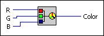
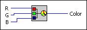

RGB to Color VI
Owning Palette: Picture Functions VIs
Requires: Base Development System
Converts a red, green, and blue value from 0 to 255 to the corresponding RGB color.

 Add to the block diagram Add to the block diagram |
 Find on the palette Find on the palette |
Owning Palette: Picture Functions VIs
Requires: Base Development System
Converts a red, green, and blue value from 0 to 255 to the corresponding RGB color.

| Add to the block diagram |
Find on the palette |